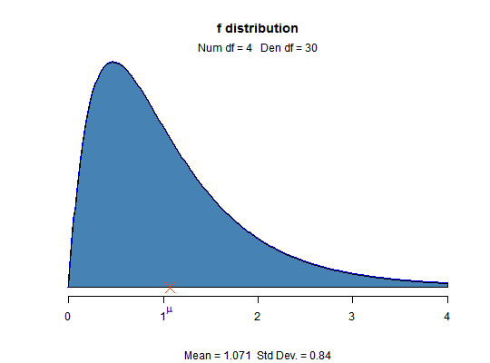
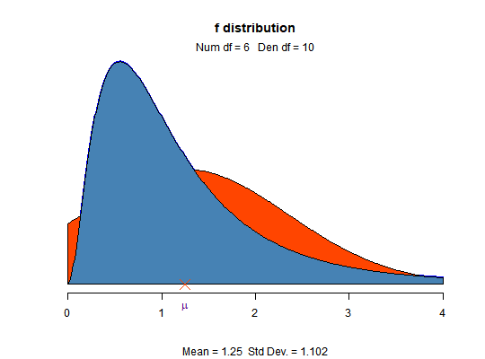

Visualize how changes in degrees of freedom affect the shape of the F distribution.
f_plot(num_df = 4, den_df = 30, normal = FALSE)
TRUE, normal curve with same mean and
sd as the F distribution is drawn.f_plot()f_plot(6, 10, normal = TRUE)